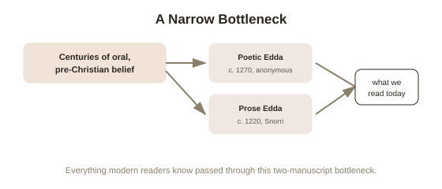

Chapter 5: Snorri Sturluson and Where These Myths Actually Come From
Chapter 1 ended with a hook worth taking seriously rather than glossing past: almost everything covered in this topic — Yggdrasil, Odin's sacrifices, Loki's arc, Valhalla, the Norns — survives today because one Christian Icelander wrote it down in the 13th century, centuries after it stopped being a living, practiced belief system. Understanding how thin, and how filtered, that chain of transmission actually is changes how the whole topic should be read.
Snorri Sturluson and the Prose Edda
Snorri Sturluson (1179–1241) was an Icelandic chieftain, politician, and poet who wrote the Prose Edda around 1220 — the single most complete, systematic account of Norse mythology that survives, and the source for most of what's covered across this entire topic, including the specific narrative framing of Ragnarok, the Norns, and much of Thor's and Odin's mythology. Snorri wrote roughly two centuries after Iceland's official conversion to Christianity in the year 1000, and his stated purpose wasn't religious devotion — it was largely practical: he was writing a handbook for poets, to preserve the elaborate mythological references and imagery that Old Norse poetry depended on, which were at real risk of becoming incomprehensible to a Christian audience that no longer held the underlying beliefs. Snorri himself frames the material with a degree of scholarly distance, at points suggesting the gods may have originally been notable human chieftains later mistaken for deities — a framing device, common in the period, that let a Christian author write extensively about pagan gods without appearing to endorse them as real.
The Poetic Edda: an older, messier, independent source
The Poetic Edda is a separate collection — anonymous poems, compiled in the Codex Regius manuscript around 1270, but built from material scholars generally agree is considerably older than Snorri's prose, in some cases possibly reaching back to the pre-Christian era, transmitted orally for generations before being written down. This matters because it gives modern scholars a genuine second source to check Snorri against — where the Poetic Edda and Snorri's Prose Edda agree, that agreement carries real weight, since two differently-sourced strands describing the same detail is stronger evidence than one text alone. Where they diverge, it becomes a live scholarly question exactly which version, if either, more accurately reflects earlier belief — and there's no simple way to resolve most of those disagreements definitively.

What actually gets lost in a transmission chain like this
This chapter is really the practical, myth-specific version of a much broader problem covered elsewhere in this library: any belief passed through multiple intermediaries, especially across a language, religion, and centuries-wide gap, is subject to real distortion — simplification, selective retelling, and unconscious (or conscious) reshaping to fit the transcriber's own framework. Snorri, writing as a Christian scholar organizing pagan material into something like a coherent system, likely imposed more narrative order and internal consistency on the myths than they ever had as living, regionally varied oral tradition — actual pre-Christian belief was almost certainly messier, more locally inconsistent, and less systematized than the tidy nine-realm cosmology Chapter 1 presented. None of this means the material is worthless or purely invented — archaeological evidence (place names, artifacts, contemporary accounts from outside observers like Arab traveler Ahmad ibn Fadlan, who documented a Viking funeral firsthand in the 10th century) corroborates real pieces of it independently. But it does mean every specific detail in this topic should carry an invisible asterisk: this is what survived one particular, centuries-later, culturally filtered act of writing it down, not a direct transcript of what Viking-age Scandinavians actually, uniformly believed.
Why this doesn't diminish the material
Knowing the transmission is imperfect doesn't make Ragnarok, the Norns, or Odin's sacrifice for wisdom any less genuinely compelling as a coherent, meaningful mythology — it just relocates what you're actually appreciating. You're not reading a pristine window into pre-Christian Scandinavian belief exactly as it was lived. You're reading a remarkable, centuries-old act of preservation and reconstruction by a single skilled writer working from fragments, oral memory, and poetic tradition that was already fading in his own lifetime — which is its own kind of remarkable, and worth appreciating on its own terms rather than mistaking for something it was never quite able to be.
Try this
Ideas for noticing or testing this in your own life.
- Go back through Chapters 1-4 and pick one detail you found especially vivid or specific (Thor eating an entire ox in disguise, the Norns' exact names) — and sit with the fact that it likely passed through oral tradition, then one author's 13th-century pen, before reaching you.
- Notice how you personally weigh "corroborated by a second source" versus "only in one account" next time you're evaluating any claim, myth or otherwise — the Poetic Edda / Prose Edda comparison is a clean, low-stakes place to practice that instinct.
Worth pulling on?
A few loose threads from this chapter — if any of these genuinely grab you, that's a good sign of where to go next.
- This entire chapter is really a worked example of a much broader epistemological question — how much you should trust something you only know through a long chain of retelling. → Already in the library: Epistemology's chapter on testimony covers the general version of exactly this problem.
- Other mythological traditions survived through very different transmission paths — some through continuous unbroken practice, some through far more extensive written records than Norse myth ever had. → A natural comparison point for future topics under Mythology, if the sources question here is what grabbed you most.